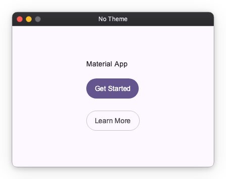
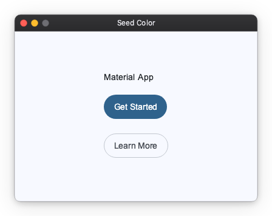
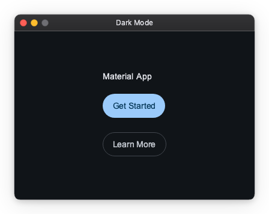

Material Theme¶
MaterialThemeFactory is a factory that creates Theme objects pre-configured with Material Design 3 color roles derived from a seed color.
Import convention
App and ThemeFactory are the public names exported from nuiitivet.material for these classes.
Import and use them by these names throughout your code.
The rest of this guide follows this convention.
Setting the Theme¶
Pass a Theme to App via the theme parameter to apply it to the entire application.
No theme¶
When theme is omitted, App applies the default M3 light theme (#6750A4).

Seed color¶
Pass a different seed color to generate a distinct M3 palette:
import nuiitivet.material as nv
nv.App(nv.Window(content=HomeScreen()), theme=nv.ThemeFactory.light("#00639B")).run()

Dark mode¶

Tuning the Palette¶
A seed color does not fully determine the palette. Two further inputs shape how roles are derived from it, and both default to the Material 3 defaults.
Scheme variant¶
variant selects the algorithm that derives the tonal palettes from the seed. It defaults to SchemeVariant.TONAL_SPOT, the M3 default, which keeps colors close to the seed's hue at a moderate chroma.
import nuiitivet.material as nv
nv.App(nv.Window(content=HomeScreen()), theme=nv.ThemeFactory.light("#6750A4", variant=nv.SchemeVariant.VIBRANT)).run()
| Variant | Character |
|---|---|
TONAL_SPOT |
M3 default; moderate chroma near the seed hue |
NEUTRAL |
Near-grayscale, seed hue barely present |
MONOCHROME |
Pure grayscale |
VIBRANT |
Maximum chroma; strongly saturated |
EXPRESSIVE |
Shifts hue away from the seed for contrast |
FIDELITY / CONTENT |
Stays as close to the literal seed color as possible |
RAINBOW / FRUIT_SALAD |
Playful multi-hue schemes |
Contrast level¶
contrast_level accepts a value in [-1.0, 1.0] and defaults to 0.0. Higher values push foreground roles further from their backgrounds, which helps meet accessibility requirements.
nv.App(nv.Window(content=HomeScreen()), theme=nv.ThemeFactory.light("#6750A4", contrast_level=0.5)).run()
Both options are accepted by ThemeFactory.light, dark, from_seed, and from_seed_pair.
Switching Themes at Runtime¶
To switch the active theme, call App.of(self).set_theme(...) with a Theme
instance or a registered name.
Light / Dark Toggle¶
from_seed_pair generates both a light and a dark Theme from a single seed color. Use an Observable[str] for the button label so it updates reactively without a full rebuild:
import nuiitivet.material as nv
light, dark = nv.ThemeFactory.from_seed_pair("#6750A4")
class HomeScreen(nv.ComposableWidget):
_is_dark = False
def on_toggle() -> None:
next_theme = light if self._is_dark else dark
nv.App.of(self).set_theme(next_theme)
nv.App(nv.Window(content=HomeScreen()), theme=light).run()
See the full runnable demo: samples/design-system/material_theme/light_dark_toggle.py
Multiple Themes¶
When themes are too many to hold in local scope everywhere, register them by name with app.register_themes(...) and switch by string key:
import nuiitivet.material as nv
ocean_light, ocean_dark = nv.ThemeFactory.from_seed_pair("#00639B")
forest_light, forest_dark = nv.ThemeFactory.from_seed_pair("#386A20")
app = nv.App(nv.Window(content=HomeScreen()), theme=ocean_light)
# Register before run() — safe before the event loop starts
app.register_themes({
"ocean-light": ocean_light,
"ocean-dark": ocean_dark,
"forest-light": forest_light,
"forest-dark": forest_dark,
})
app.run()
# Switch from anywhere in the widget tree
nv.App.of(self).set_theme("forest-dark")
See the full runnable demo: samples/design-system/material_theme/multiple_themes.py
Registry keys and from_seed_pair names
from_seed_pair accepts an optional name argument, but it assigns the same label to both the light and dark Theme — no -light / -dark suffix is appended automatically. The dictionary keys passed to register_themes are the actual lookup keys; choose them freely.
\"light\" and \"dark\" as built-in fallbacks
set_theme("light") and set_theme("dark") are reserved shortcuts. When no theme with that exact name is registered, they fall back to a plain (non-Material) default theme.
These strings happen to equal the values of Theme.mode, but they are separate concepts — one is a registry lookup key, the other is a property of the Theme object itself.
Advanced: Color Roles in Custom Widgets¶
Target audience
This section is for authors building custom widgets. Built-in Material widgets apply color roles automatically; if you are only composing them, you do not need this.
Reading the current theme¶
Inside any mounted widget, Theme.of(self) returns the active Theme:
Do not call it from __init__
Unlike Geometry.of / Navigator.of / Overlay.of / App.of, which raise
when called too early, Theme.of never raises: with no reachable
AppScope it returns a bare Theme(mode="light"). That keeps paint code
working for deliberately detached widgets, but it also means a call from
__init__ — where the widget has no parent yet, so the app's theme is
unreachable — silently pins the widget to the light default forever. Read the
theme in on_mount() or at paint time. The premature case logs a warning
once per widget type, so check the log if colors look stuck.
Applying a color role¶
Call theme.extension(MaterialThemeData) to retrieve M3-specific data, then look up a ColorRole:
import nuiitivet.material as nv
from nuiitivet.material.theme.theme_data import MaterialThemeData
mat = nv.Theme.of(self).extension(MaterialThemeData)
if mat is not None:
surface_color = mat.roles.get(nv.ColorRole.SURFACE_CONTAINER)
ColorRole also provides a resolve shorthand that combines both steps:
Both extension() and resolve() return None outside an initialized widget tree (e.g. during construction), so always guard against None.
Example: theme-aware custom widget¶
import nuiitivet.material as nv
class ThemedCard(nv.ComposableWidget):
def __init__(self, child: nv.Widget) -> None:
super().__init__()
self.child = child
def build(self) -> nv.Widget:
bg = nv.ColorRole.SURFACE_CONTAINER.resolve(nv.Theme.of(self)) or "#FFFFFF"
return nv.Container(color=bg, padding=16, child=self.child)
Available Color Roles¶
| Group | Roles |
|---|---|
| Primary | PRIMARY, ON_PRIMARY, PRIMARY_CONTAINER, ON_PRIMARY_CONTAINER, INVERSE_PRIMARY |
| Secondary | SECONDARY, ON_SECONDARY, SECONDARY_CONTAINER, ON_SECONDARY_CONTAINER |
| Tertiary | TERTIARY, ON_TERTIARY, TERTIARY_CONTAINER, ON_TERTIARY_CONTAINER |
| Background | BACKGROUND, ON_BACKGROUND |
| Surface | SURFACE, ON_SURFACE, INVERSE_SURFACE, INVERSE_ON_SURFACE, SURFACE_VARIANT, ON_SURFACE_VARIANT |
| Surface containers | SURFACE_CONTAINER_LOWEST, SURFACE_CONTAINER_LOW, SURFACE_CONTAINER, SURFACE_CONTAINER_HIGH, SURFACE_CONTAINER_HIGHEST |
| Outline | OUTLINE, OUTLINE_VARIANT |
| Utility | SHADOW, SCRIM |
| Error | ERROR, ON_ERROR, ERROR_CONTAINER, ON_ERROR_CONTAINER |